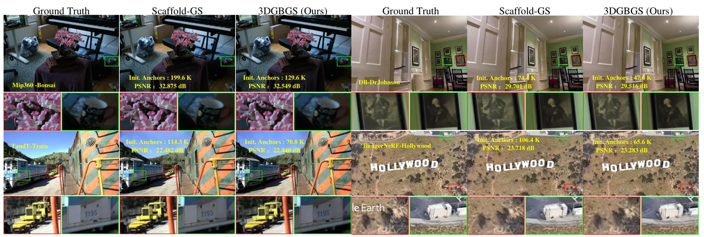
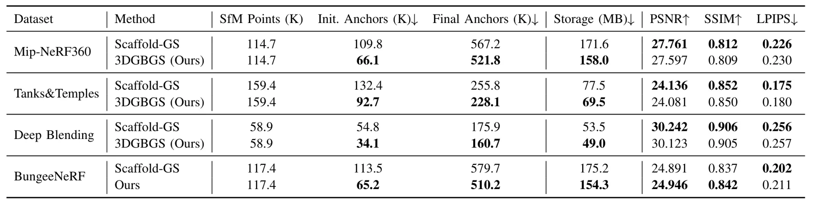

3DGBGS：用于紧凑新视角合成的三维粒球 Gaussian Splatting3DGBGS: 3D Granular Ball Gaussian Splatting for Compact Novel View Synthesis
与 SfM point cloud 和紧凑 anchor representation 直接相关，量化结果清晰；最终 anchor 和存储降幅中等，训练开销及复杂区域细节需核查。
一句话工作总结
用自适应粒球组织非均匀 SfM 点云，并以球心和半径初始化 anchor 及尺度先验，减少 3DGS 存储。
摘要
3DGBGS 针对 anchor-based 3DGS 以固定 voxelization 处理非均匀 sparse SfM point clouds 时的紧凑性与质量冲突，引入 adaptive granular ball organization。较大的 balls 表示平滑冗余区域，较小 balls 保留复杂几何和局部细节；Granular Ball Anchor Initialization 以球心初始化紧凑 anchors，Granular Ball Scale Prior 则以球半径提供 Gaussian generation 的局部尺度先验。四个 benchmark 上，初始和最终 anchors 分别平均减少 37.1% 与 10.0%，存储减少 9.8%，同时保持相当渲染质量。
Three-dimensional Gaussian Splatting (3DGS) enables high-quality real-time novel-view synthesis through explicit Gaussian primitives and differentiable rasterization. 3DGS and Granular Ball Computing (GBC), proposed in 2019, share a natural compatibility in adaptive representation. The efficiency of 3DGS partly stems from a coarse-to-fine and on-demand refinement process that draws on the generation principle of GBC. This connection motivates us to further introduce adaptive granular ball organization into anchor-based 3DGS. Existing anchor-based methods typically construct anchors from sparse SfM point clouds through fixed voxelization, which cannot adequately adapt to spatially non-uniform point distributions and leads to a trade-off among anchor count, model compactness, and rendering quality. To address this issue, we propose 3DGBGS (3D Granular Ball Gaussian Splatting), a compact anchor-based framework for novel-view synthesis. 3DGBGS adaptively partitions SfM point clouds into 3D granular balls, using larger balls to compactly represent smooth and redundant regions and smaller balls to preserve complex geometry and local details. Based on this representation, Granular Ball Anchor Initialization (GBAI) uses granular ball centers to initialize compact anchor positions, while the Granular Ball Scale Prior (GBSP) exploits granular ball radii to provide local scale priors for Gaussian generation. Experiments on four benchmarks show that 3DGBGS reduces initial and final anchors by 37.1% and 10.0%, respectively, and model storage by 9.8% on average, while maintaining comparable rendering quality.
中文解读摘录
图表/页面预览

{kind=link}

{kind=link}
